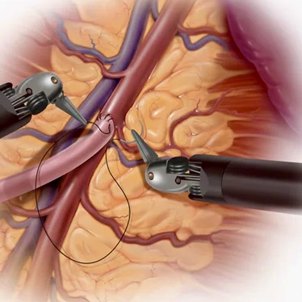
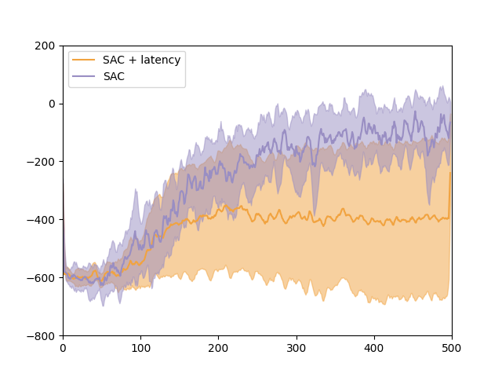
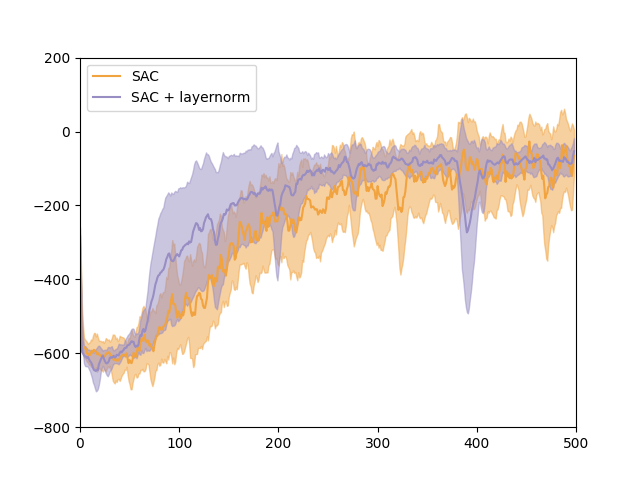
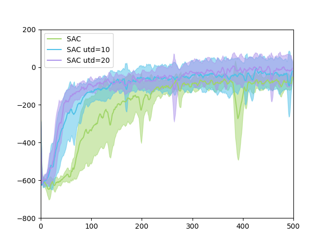

How can we automate cherry-picking 🍒 when the wind is blowing, the branch is shaking and the cherries are trembling? This task is an example of grasping without rigid-surface support: the problem is inherently dynamic as any contact with the object might cause it to move and further disturb its movement. The difficulty becomes more prominent for fine manipulation of small objects, as the perception error and sensor noise dominate and grasps can hardly be precise. Similar challenges arise in everyday interactions: to remove broken shells from flowing egg whites, to retrieve earrings from the hanging rack, and for surgeons to remove clots from deformable organs. Given the ubiquitous nature of these problems, developing robotic solutions to automate these has immense practical and economic value.
Similar challenges arise in everyday interactions: to remove shells from flowing egg whites,
Picking up egg yolks
Picking up noodles
Removing clots from deformable organs
Picking up a moving ball
We conduct extensive ablations in simulator and real world to provide expirical evidence understanding our design choice.
Offline Data
Randomize Latency
Layernorm
Update to Data
Our agent could generalize to varying perception noise; objects with different shape, size, texture; dynamic disturbance; objects with varying fluid support in zero-shot , without further learning.